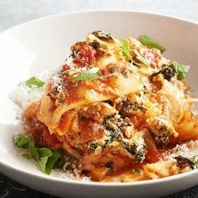

Spicy Turkey Lasagna

Description
This is a delicious and healthy slow-cooker Lasagna recipe that uses ground turkey as the protein source.
Ingredients
- 12 ounces uncooked 93% lean ground turkey
- 1 teaspoon dried oregano, crushed
- 1/4 teaspoon crushed red pepper
- 1 carton light ricotta cheese, (15 ounce)
- 1 3/4 cups shredded Italian five-cheese blend
- 1 package frozen chopped spinach, (10 ounce) thawed and squeezed dry
- 3 1/2 cups chunky pasta sauce with mushrooms and green pepper
- 12 no-boil lasagna noodles
- 1/2 cup water
- 1/4 cup shredded reduced-fat mozzarella cheese (1 to 2 ounces)
- Snipped fresh basil or grated Parmesan cheese (optional)
- Chunky pasta sauce with mushrooms and green pepper (optional)
Steps
- In a large nonstick skillet cook ground turkey over medium-high heat until no longer pink, using a wooden spoon to break up turkey as it cooks. Remove from heat. Stir in oregano and crushed red pepper.
- In a large bowl combine ricotta cheese, Italian cheese blend, and spinach.
- To assemble, spread 1 cup of the pasta sauce in the bottom of a 5-quart oval slow cooker. Top with half of the noodles, breaking and overlapping as necessary to fit. Add half of the turkey mixture, 1 cup of the pasta sauce, and half of the water. Spread half of the cheese mixture over ingredients in cooker. Repeat layers.
- Cover and cook on low-heat setting for 3-3/4 hours. Top with the remaining 1/2 cup pasta sauce and mozzarella cheese. Let stand, covered, for 10 minutes before serving.
- To serve, cut lasagna into eight portions. If desired, sprinkle each serving with basil and serve with additional pasta sauce.
Notes
From the Test Kitchen
For easy cleanup:
Line your slow cooker with a disposable slow cooker liner. Add ingredients as directed in recipe. Once your dish is finished cooking, spoon the food out of your slow cooker and simply dispose of the liner. Do not lift or transport the disposable liner with food inside.